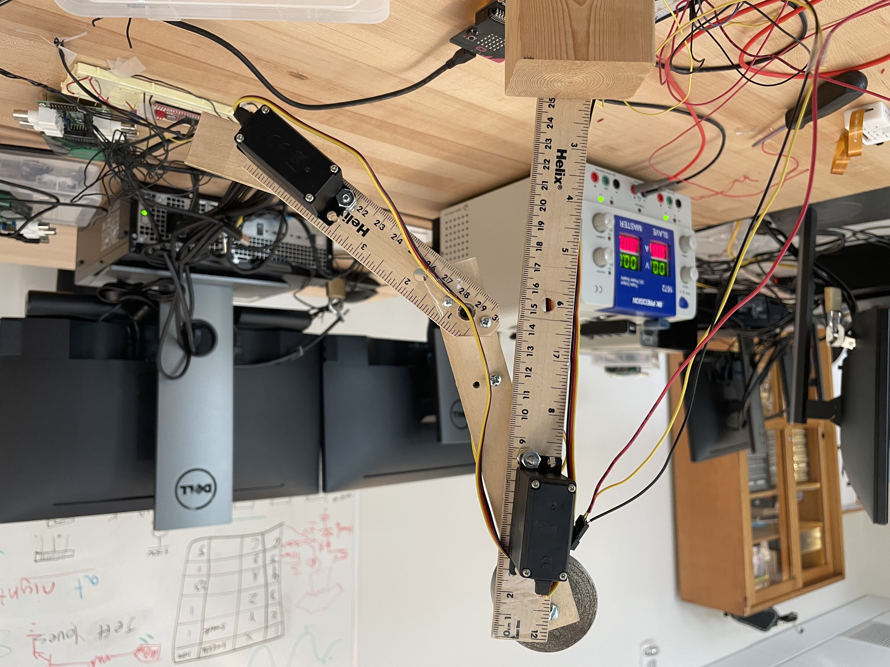

There is a surprisingly large market for prosthetics. There are approximately 30 million potential customers worldwide. And the demand for prosthetic limbs is expected to increase in the coming years, with an estimated 3.6 million people in the United States alone projected to have limb loss by 2050. Unfortunately, current products are often expensive, with costs ranging from $31,129 for a unilateral upper limb to $453,696 for multiple limb loss, according to the Department of Veteran Affairs.
Even though a person may have lost a limb, the brain functions to perform actions with that limbs are still available. This allows the team to train a machine-learning algorithm that correlates certain signal patterns with corresponding intended arm movements. The team aims to develop an intelligent prosthetic arm that strikes a balance between usability, complexity, and affordability.
The arm can be divided into three separate systems:
Team members: Cuong Nguyen, Joseph Tholley, Francis Lynch, Tyler Jordan, Gaetano Ippolito, John Cafferky.
This big arm setup is passed to the team from previous graduates. The robot is to scale with a real human arm. To improve our skills, the team created a smaller version. We construct the higher level frameworks with this smaller system, then scale them up for the larger arm.
Joseph Tholley demonstrates the use of EKG equipment to observe the brain activities through bioelectrical signal collection.
This system uses a Long Short-Team Memory neural network to interpret the bioelectrical data as arm movemements. The model will mirror a ConvLSTM exercise. The exercise asks the programmer to implement a ConvLSTM model that interpret data collected by a phone attached to a body. The data includes information from the phone's accelerometer and gyroscope. The results include 6 common human activities: sitting, walking, walking upstairs, walking downstairs, laying, standing.